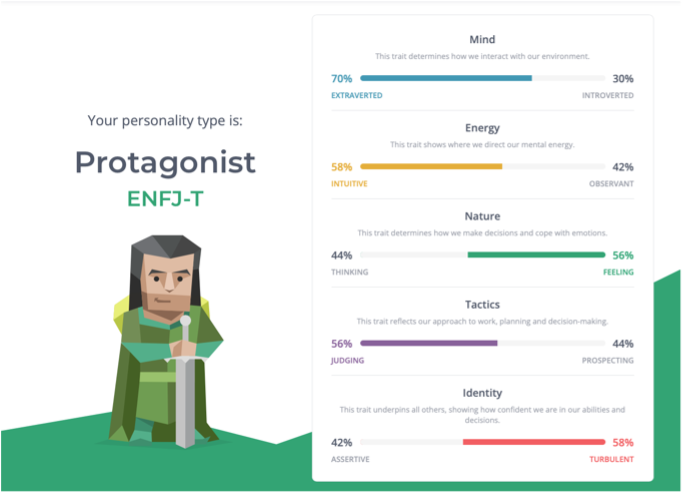

Group Profile
Team Profile
Team Name
name
Personal Information
Name:
Dimosthenis (Dimos) Alexiou
Student Number:
s3957155
Student Email Address:
s3957155@student.rmit.edu.au
Background, Hobbies, IT Interest, and IT Experience:
My education tis acquiring my Cert III in Information, Digital, Media and Technology, which I got through my IT Traineeship. In my spare time I enjoy producing music on my MacBook (Ableton is the DAW I use), working on my fitness and sometimes a bit of gaming. My favourite sport is Soccer, and I play in a futsal team once a week. Present, my main interest in IT is in the Cyber Security field. The aspect of being in the mind of the attackers to prevent what they are doing fascinates me. My interest in IT all strands from my passion of technology, where from a young age I would dismantle old or broken technology (Computers, Stereos, DVD Players etc.) When I was 11 years old, an event that really sparked my growing interest for IT was when I successfully installed a “RGH” (Reset Glitch Hack) on my Xbox 360. The process of performing this “mod/hack” includes, soldering mod chips onto the console’s motherboard, which allows you to flash the nand and install custom firmware. From that day, my interest and passion for IT has only grown greater.
Team Profile
Myers Brigs:
www.16personalities.com
Dimos Results:

Nicholas Results:
Matthew Results:
How will this information be helpful towards the group?
paragraph
Tools
GitHub
GitHub Website:
website
GitHub Repository:
https://github.com/dimos16/Assessment-2-Group-Profile
Comments on the audit trail on the Git repository:
comments
Canvas
Canvas Group:
group
Industry Data
IT Work
1.
What kind of work is done by the IT professional?
Name: James Weston
Profession: Cyber Security Analyst
https://www.youtube.com/watch?v=IAFqgmpRJ-g&ab_channel=Inmarsat
- What kinds of people does the IT professional interact with? Are they other IT professionals? Clients? Investors? The general public?
The IT professional I will be discussing is a Cyber Analyst who works at Inmarsat, protecting technical information relating to assets in space. The Cyber analyst group of the corporation are often working collaboratively in an office, but they still interact with other groups of the workplace if they require information from other colleagues.
- Where does the IT professional spend most of their time?
James would spend most of his time in office, working with colleagues, monitoring spikes in network traffic that indicates an attempted denial of service attacks, and increases in failed authentication attempts on a certain system to reveal breaching attempts.
- What aspect of their position is most challenging?
The most challenging thing part about a Cybersecurity role is the increasing number of bad guys distributing malware and infiltrating networks. With these attacks becoming more sophisticated, the cyber analysts must always try to be one step ahead of the breachers, by keeping as up to date as possible on the latest threats and exploits.
2.
What kind of work is done by the IT professional?
Name: Justin Hammond
Profession: Software Engineer
https://www.youtube.com/watch?v=j1fc0FlCjyI&ab_channel=JustinHammond
- What kinds of people does the IT professional interact with? Are they other IT professionals? Clients? Investors? The general public?
Justin works from home as a software engineer, where he usually starts his day by checking emails which are mostly about code and reviewing code that his co-workers have submitted and leaving feedback. He interacts with his colleagues via online meetings where they discuss what they are working on; what they did, what they plan to do, and any barriers they face.
- Where does the IT professional spend most of their time?
- What aspect of their position is most challenging?